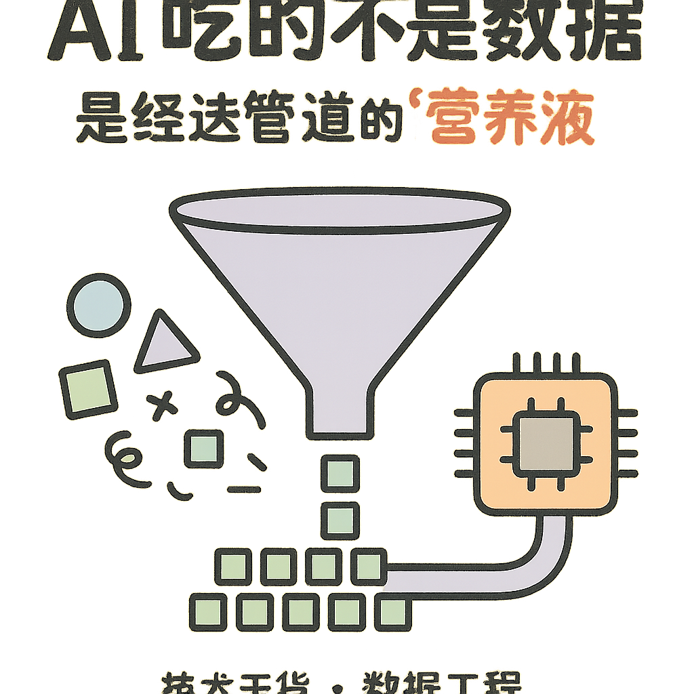
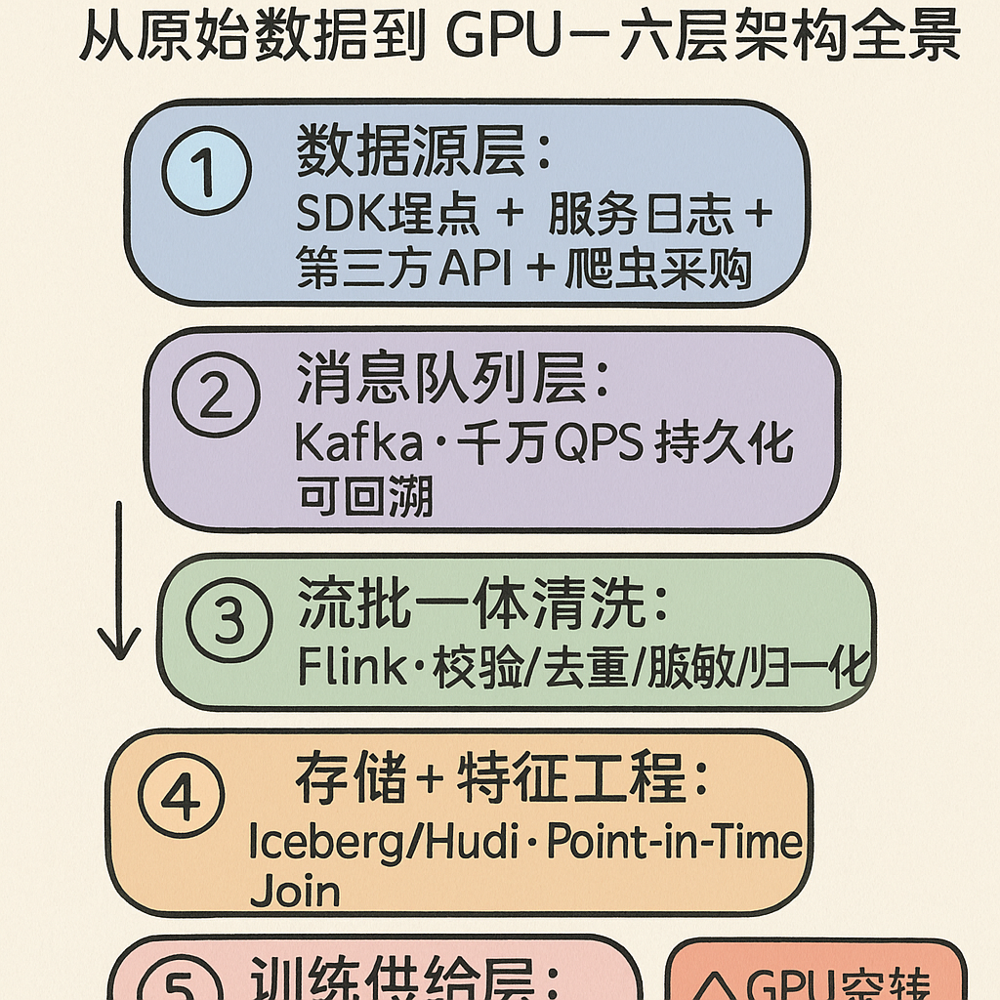
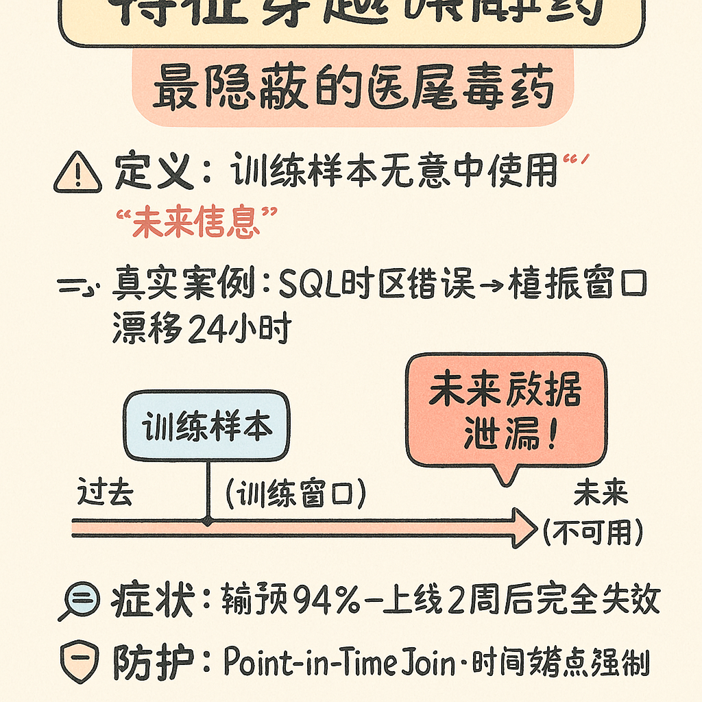
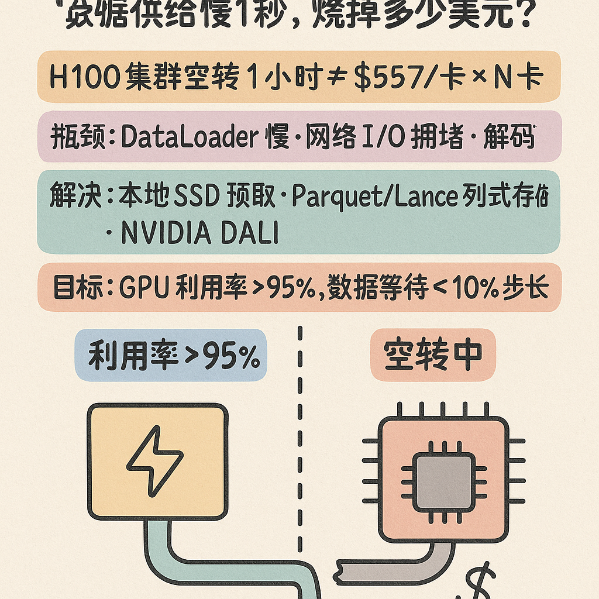
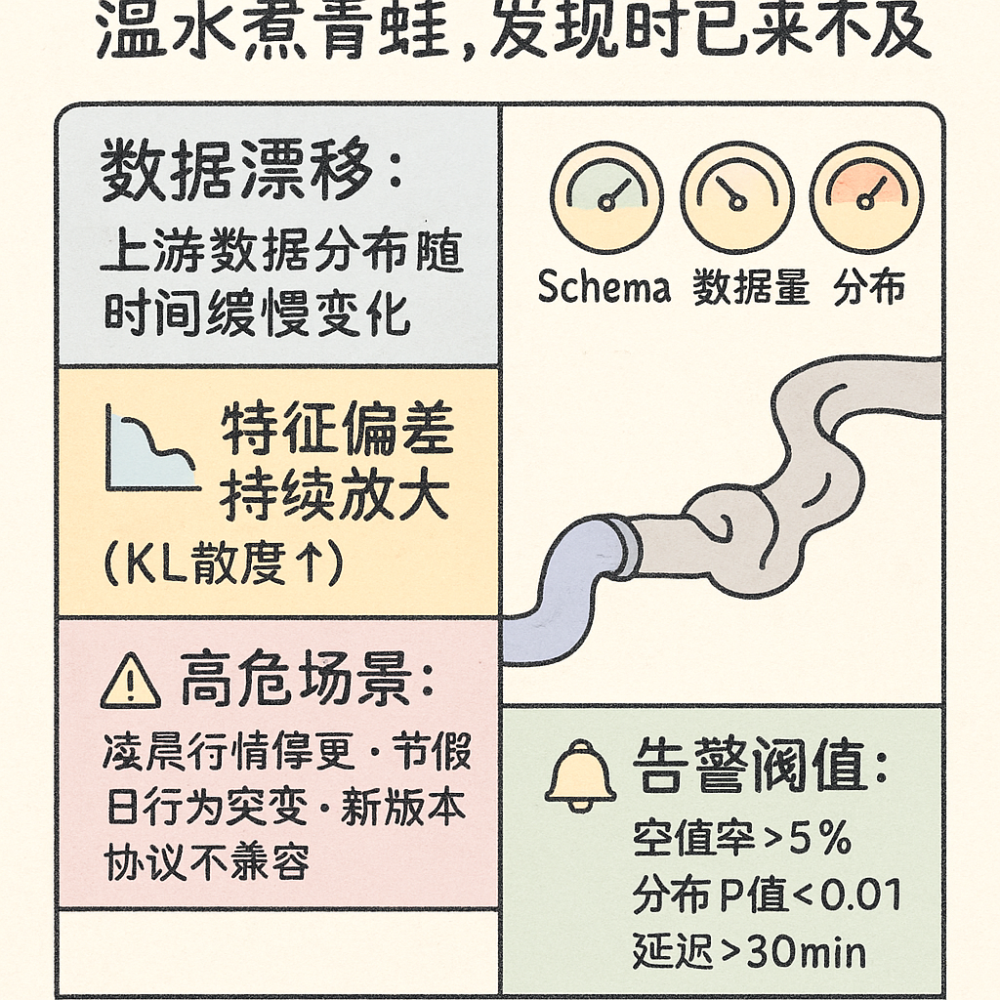
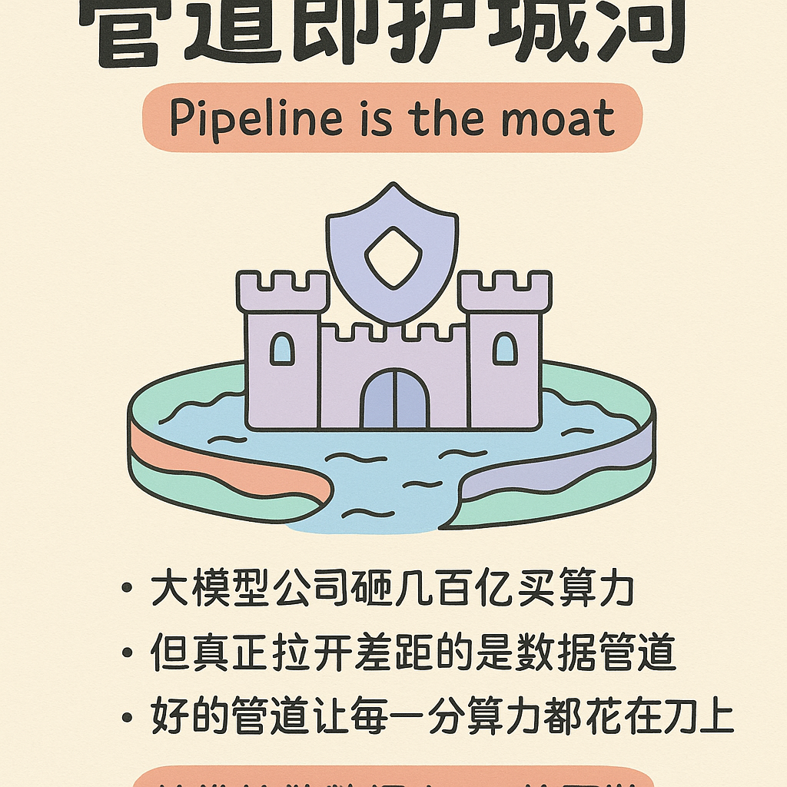

引言
训练 GPT-5，本质上是一个数据物流工程问题。
你可能会觉得这是个夸张的说法。毕竟，AI 圈这两年最热闹的话题是什么？模型架构创新——MoE 还是 Dense？注意力机制还能怎么改？推理优化——vLLM、SGLang、量化部署谁更快？Agent 框架——LangChain、AutoGPT 谁才是未来？
但你有没有注意到一个诡异的沉默：没人谈论数据是怎么到训练集群手里的。
我们热衷于讨论 GPT-5 需要多少张 H100、训练几个月、烧掉几十亿美元，却对一个问题视而不见——这些 GPU 吃的每一口数据，是从哪根管子流进来的，经过了几道工序，那些管子在多大流量下会不会爆。
这就好比你在讨论一顿米其林大餐的精妙口味，却从不问这些食材从农场到你餐桌之间经历了什么。事实上，不新鲜的食材、污染的供应链、错误的储存温度，随便哪一环出问题，这顿饭就不可能好吃。
本文的核心论点很简单：数据管道是 AI 产业被系统性忽视的护城河。 模型架构可以复现、GPU 可以买、训练框架可以开源，但一套经过工业级验证的数据基础设施——采集、传输、清洗、特征工程、实时供给——其建设周期和隐性成本，远超外界想象。
这不是一个"性感"的话题。但正是这些不性感的管道工程，决定了 AI 的真正天花板。
第一章：模型不缺聪明，缺的是"吃的"
Scaling Law 背后的残酷真相
2020 年 OpenAI 的 Scaling Law 论文告诉世界：模型性能随着模型规模、数据规模、算力规模三者同步增长。这个发现在随后几年被反复验证，成为大模型军备竞赛的理论基石。
但 Scaling Law 有一个容易被忽略的推论：当模型规模大到一定程度后，数据质量比数据数量更能决定性能上限。
DeepSeek 团队在其 2024 年 1 月发表的 DeepSeek-LLM 论文中直接回应了这个问题。他们的研究表明，高质量数据可以改变模型规模和训练 tokens 之间的最优配比——换句话说，如果你有更"信息密集"的数据，更大的模型才值得训练。用低质量数据堆量，参数再多也打不穿天花板。
DeepSeek-V3 技术报告（2024 年 12 月）更是将数据工程的思路贯彻到底：他们在 14.8T 高质量 tokens 上完成了预训练，采用的正是"去重→过滤→重新混合"（deduplication-filtering-remixing）的数据构建策略——先用激进去重清洗 Common Crawl 等原始数据，然后补充数学和编程相关的高质量语料，最后按比例混合。结果如何？14.8T tokens、2.664M H800 GPU 小时（约 557 万美元），训练出了当时最强的开源基础模型。
这说明什么？说明数据工程不是在给模型打工，数据工程本身就是核心竞争力。
数据采购：看不见的军备竞赛
再来看一组数字：
- 2024 年 2 月，Google 与 Reddit 签署内容授权协议，每年约 6000 万美元，获得 Reddit Data API 的访问权限用于 AI 训练。
- 2024 年 5 月，OpenAI 跟进，与 Reddit 达成内容授权协议，据报道金额约为 7000 万美元/年。
- 同一月，OpenAI 与新闻集团（News Corp）签署多年协议，总价值超过 2.5 亿美元（五年期），获得《华尔街日报》《纽约邮报》《巴伦周刊》等媒体的历史和实时内容使用权。
- OpenAI 还先后与《金融时报》、Axel Springer（德国出版巨头）、Le Monde 等达成内容授权协议。
这些钱，花在哪里了？不是 GPU，不是模型参数，不是推理优化——全是数据采购。
但就算你有钱把全世界的优质数据都买下来，真正的问题才刚刚开始：怎么把 PB 级的、来自上百个不同来源的、结构和质量参差不齐的原始数据，实时、稳定、可重复地喂给数千张 GPU 组成的训练集群？
这就是管道工程。这就是本文要讲的东西。
第二章：从"水源"到"水龙头"——数据管道全景
如果把整个 AI 数据基础设施比作城市供水系统，它大致是这样的：
水源（原始数据）→ 输水管道（采集 & 传输）→ 净水厂（清洗 & 转换）→ 配水管网（特征工程）→ 水龙头（DataLoader → GPU）
每一层出了问题，水就断了。GPU 就等着。钱就烧着。
第一层：埋点 & 日志采集
对于互联网公司自研的大模型，第一道"水源"往往是自家产品产生的行为数据。以字节跳动、美团、快手这样的公司为例，客户端 SDK 需要采集的用户行为事件——点击、滑动、播放、停留时长、搜索词、购买行为——QPS 动辄千万级别。埋点 SDK 面临一个根本性矛盾：采集的完整性 vs 客户端性能开销。
业界常用的平衡手段包括：采样策略、本地聚合、异步批量上报、Protobuf / FlatBuffers（相比 JSON，序列化体积减少 60-80%，解析速度提升 5-10 倍）。
这些听起来像是传统后端架构的工作，但对于数据驱动的 AI 系统来说，埋点质量直接决定了训练数据的天花板。一个埋点字段的类型错误，可能在三个月后让你发现 30% 的训练样本是脏数据。
第二层：消息队列与实时传输
数据从千万个客户端汇聚到数据中心后，第一站是消息队列。Apache Kafka 是这个领域的事实标准。全球前 100 的科技公司中，超过 80% 在生产环境使用 Kafka 处理流式数据。
最近两年，Kafka 生态也有了新的竞争者：AutoMQ（基于云原生对象存储的 Kafka 兼容系统）和 Apache Fluss（阿里巴巴开源的新一代流存储，原生支持湖仓一体）。
为什么大模型公司几乎都选 Kafka？核心原因：消息回溯（Replay）支持反复读取同一批数据做消融实验；顺序保证对时序特征工程至关重要；生态整合几乎所有流计算框架都把 Kafka 作为一等公民支持。
第三层：流批一体的清洗与转换
数据进了消息队列，还是"生"的——有乱码、有缺失、有重复、有格式不一致。过去十年，数据处理范式经历了 ETL → ELT → Streaming SQL / 流批一体的进化。对于 AI 训练管道，流批一体是必选项——因为训练集可能同时包含"过去一年的全量数据"（批处理）和"过去五分钟的实时数据"（流处理）。
第四层：特征工程与样本拼接
清洗完的数据还只是"原料"，距离 GPU 能吃的"营养液"还差最关键的一步：特征工程 + 样本拼接。核心陷阱是时间窗口——用户特征必须严格来自时刻 t 之前的数据，否则就产生了特征穿越。
第五层：DataLoader —— GPU 等待数据就是在烧钱
一块 H100 GPU 的租赁价格大约是 $2-4/小时，一个千卡集群跑一天就是 5-10 万美元。如果 DataLoader 跟不上 GPU 的消费速度，GPU 就会"空转"——术语叫 GPU Starvation（GPU 饥饿）。
在没有专门优化的训练集群上，GPU 利用率可能只有 30-50%。优化方向包括：NVIDIA DALI、数据预取 & 缓存、数据分片 + 并行读取、列式存储格式（Parquet / Lance）。
第三章：为什么管道出了问题，模型就"智障"了
特征穿越（Feature Leakage）
特征穿越，也叫"时间穿越"或"目标泄漏"，是指训练样本在构造时，无意中使用了"未来信息"。训练集准确率 94%，上了线准确率跌到 50%——这几乎是特征穿越的经典症状。
防护手段：Point-in-Time Join（所有特征拼接必须精确到时间戳）、特征管道审计（每个 join 显式标注时间窗口并跑自动化测试）、隔离测试（按时间切分训练/验证集）。
数据漂移（Data Drift）
数据漂移是指线上数据的分布与训练数据的分布发生了偏移。这不是管道的 Bug，而是现实世界的自然规律——用户行为会变、热点话题会变、甚至传感器因为老化输出也会变。
防护手段：持续监控（PSI、KL 散度等指标）、增量训练（从"月度更新"进化到"日级"甚至"小时级"）、特征归一化（在线 Z-score normalization）。
数据延迟 & 清洗过度
数据延迟看似是工程细节，但会直接破坏 A/B 实验的有效性。而过度清洗同样危险——用 3-sigma 规则把所有"异常值"删除，可能恰好删掉了模型最需要学习的关键信号（欺诈交易、病毒式传播、黑天鹅事件）。
你训练了三个月的模型，可能毁在一根断了的管道上。
第四章：AI 时代数据管道的新挑战
多模态
GPT-4、Gemini、Claude 3.5 都是多模态模型。文本、图像、音频、视频——四种物理形态、编码格式、质量评估标准完全不同的数据。不是放大四倍，而是复杂度指数级增长。跨模态对齐在管道层面就需要专门的质检流程。
实时性升级：从天级到分钟级
AI 搜索引擎要求模型的知识不能截止于三天前。分钟级的增量训练要求数据管道端到端延迟从小时级压缩到分钟级甚至秒级。
Agent 时代：全新的数据源
2024-2025 年是 AI Agent 的爆发之年。Agent 产生了全新的数据类型——Agent 交互轨迹（Agent Trajectory），包含嵌套的"思维→动作→观察→反思"循环，传统扁平化 schema 完全不够用。
数据合规
GDPR、中国的《个人信息保护法》、加州的 CCPA……核心诉求是数据溯源（Data Lineage）——监管机构要求你回答"训练数据里有没有我的个人信息"。未来的管道架构必须内建不可篡改的数据血缘日志和自动化的遗忘机制。
成本：数据处理可能比训练更贵
DeepSeek-V3 的训练算力成本约 557 万美元，但其数据处理需要的 CPU 算力、存储 I/O、网络带宽、工程师时间加起来，可能超过 GPU 训练成本。
在一个成熟的 AI 系统中，模型代码只占 5-10%，其余 90% 以上都是数据管道和基础设施。
结尾：管道不性感，但管道是护城河
未来三年，AI 行业的竞争焦点会逐渐从模型层下沉到数据工程层。
不是模型不重要，而是模型会趋同。Transformer 架构已经五年没有根本性变革，MoE 几乎成了大模型的标配，RLHF 也变成基础设施级别的能力。当所有人在架构层面打平以后，拼的是什么？
拼谁能用更低的成本、更短的时间、更稳定的质量，把海量多源异构数据"消化"成模型能吸收的营养液。
管道的工程师们可能是 AI 产业链里最被低估的一群人。他们不写论文、不出现在 Keynote 上、不参加 AI Summit 的圆桌讨论。但他们的工作决定了模型能不能按时训练、上线后会不会翻车、训练成本能不能打平商业回报。
做管道的，是 AI 时代的地下水务工人——你看不到他们，但离开他们一天，整座城市就会瘫痪。
当所有人都在抢 GPU 的时候，聪明的人在修水管。